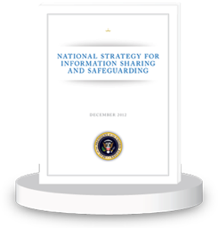

Information Sharing Environment
2013 Annual Report to the Congress
NATIONAL SECURITY THROUGH RESPONSIBLE INFORMATION SHARING
NATIONAL SECURITY THROUGH RESPONSIBLE INFORMATION SHARING
In April, when terrorists detonated two bombs at the Boston Marathon, we were all reminded of what is never far from our minds-the persistent threat of terrorism that our nation is facing. When, a couple of months later, our nation's security was compromised because an insider disclosed classified information to the news media, we were also reminded of the importance of strengthening information sharing and safeguarding in tandem.
In the National Strategy for Information Sharing and Safeguarding (National Strategy), released in December 2012, the President succinctly sets the context for our responsible information sharing challenge:
Since the September 11, 2001 terrorist attacks, we have seen great improvement in information sharing. Today, our analysts, investigators, and public safety professionals are sharing more information and cooperating more effectively than ever before. Unfortunately, we also have had instances when critical information was not shared quickly or widely enough, or when unauthorized disclosures of classified and sensitive information damaged our national security.
This National Strategy for Information Sharing and Safeguarding aims to strike the proper balance between sharing information with those who need it to keep our country safe and safeguarding it from those who would do us harm. While these two priorities—sharing and safeguarding—are often seen as mutually exclusive, in reality they are mutually reinforcing.
This report, submitted to the Congress on behalf of the President, provides a transparent assessment of the progress and performance of the departments and agencies charged with responsibly sharing information, offering accountability to those who own and operate the Information Sharing Environment. In this report we highlight progress toward the goals and vision of the National Strategy. We end the report with the Way Forward, describing our government-wide processes and plans for the coming year.
Our role, as the national office for responsible information sharing, is to plan for, coordinate the development of, and monitor progress towards development of the distributed and decentralized Information Sharing Environment (ISE) across our federal, state, local, tribal, territorial, private sector, and international partners. We exercise these responsibilities via our three part mission.
Since 2001, we have made significant progress toward effectively sharing information with the right people, at the right time, and in the right way. After the Boston Marathon bombing, law enforcement officials, while recognizing and developing opportunities for improvement, highlighted the effectiveness of post-9/11 innovations like the National Network of Fusion Centers, Joint Terrorism Task Forces, and interoperable systems that allow analysts and investigators to gain access to relevant information in a way that maintains privacy protections, while promoting a culture of information sharing.
We are continuing to work on transforming our domestic information sharing architecture to realize greater efficiencies, to strengthen alignment across various information sharing initiatives, and to better identify, respond to, and prevent terrorist acts and other priority threats. We are exploring opportunities to leverage our nation's investments in counterterrorism and homeland security information sharing to accelerate progress with responsible cybersecurity information sharing.
The publication of the National Strategy was one of the key milestones achieved this year; it focuses on treating information as a national asset that is valued and responsibly shared within existing laws and policies. Further, the National Strategy reminds us of the central role information plays in decisionmaking across levels and sectors of government.
This year we continued to press for greater interoperability through common standards, and for improving identity access and management capabilities across all stakeholders. We also understand the importance of protecting privacy, civil rights, and civil liberties, and are continuing to pursue automated multi-lateral agreements that will build protections and facilitate automation at each level of the information lifecycle.
We are partnering and collaborating with the information technology industry and standards development organizations to support broad adoption of ISE interoperability frameworks, based on existing standards. In addition, we support increasing use of standards-based acquisition as the way to achieve efficiencies and deploy effective support for responsible information sharing.
The 9/11 Commission Report addressed the need to change culture in order to improve information sharing. Our work since then is now reinforced by the National Strategy and builds on the recommendations of the 9/11 Report, placing emphasis on an important clarification: that sharing and safeguarding information are two sides of the same coin. Improvements in safeguarding information—through controls over access and discovery, while considering both security and privacy requirements—engender trust and legitimacy, and enable policy-compliant information sharing.
Effective governance regimes link internal agency, program management, and community decisionmaking efforts, rather than having after-the-fact advocacy for established positions. These regimes bring together the dual goals of sharing and safeguarding information—and encourage shared risk management. We continue to clarify the requirements and strengthen the frameworks needed to promote and conduct effective governance across our stakeholder communities.
In 2013 terrorism-related information sharing remained on the Government Accountability Office's (GAO) High Risk List. Along with our agency partners, we have made substantial progress integrating GAO's recommendations and are committed to solving the remaining challenges. Our partners are using the office of the PM-ISE as a platform from which to expand government-wide best practices to both broaden and institutionalize responsible information sharing.
In conclusion, as stated in the National Strategy:
As President, I have no greater responsibility than ensuring the safety and security of the United States and the American people. Meeting this responsibility requires the closest possible cooperation among our intelligence, military, diplomatic, homeland security, law enforcement, and public health communities, as well as with our partners at the State and local level and in the private sector. This cooperation, in turn, demands the timely and effective sharing of intelligence and information about threats to our Nation with those who need it, from the President to the police officer in the street.
President Barack Obama
National security through responsible information sharing—our vision—is an increasing reality each and every day. We will continue to mature the ISE, using the National Strategy as our guiding framework, to support and further strengthen our mission partners in their efforts to keep Americans safe.
Kshemendra Paul
Program Manager, Information Sharing Environment
This 2013 Annual Report to Congress examines the extent to which the mandate for terrorism-related information sharing, as directed in IRTPA, is being implemented by federal departments and agencies that have stewardship over terrorism-related information; that operate systems within the Information Sharing Environment (ISE);[6] or that otherwise participate in the ISE.[7]
This Report assesses how agencies have fared against established performance measures and contains examples of progress toward information sharing goals specified in the IRTPA; Presidential guidelines and requirements; the 2007 National Strategy for Information Sharing;[8] and most recently, the 2012 National Strategy for Information Sharing and Safeguarding (National Strategy), which outlines 16 priority objectives for implementation by ISE departments and agencies. These priority objectives are the foundation for the future of the Information Sharing Environment.
This Report acknowledges remaining gaps in effective information sharing and safeguarding as identified through the ISE performance management framework and the findings of the Government Accountability Office (GAO). The activities detailed herein are products of National Strategy implementation plans under the oversight of the ISA IPC. While implementation planning and performance management are focused on the National Strategy and its associated priority objectives, GAO's High Risk List areas of concern are being addressed along with National Strategy implementation.
Finally, as in previous years, this Report includes the PM-ISE's reporting responsibilities associated with what was formerly known as the Interagency Threat Assessment and Coordination Group (ITACG).[9] Effective April 2013, the ITACG was succeeded by the Joint Counterterrorism Assessment Team (JCAT). Details of this succession are contained in Section 1 of this Report.
The ISE is a partnership for sharing and safeguarding terrorism-related information among the law enforcement, public safety, defense, intelligence, homeland security, and diplomatic communities, and includes Federal Government departments and agencies; state, local, tribal, and territorial (SLTT) governments; private-sector partners; and foreign partners and allies. This 2013 ISE Annual Report to the Congress incorporates input from mission partners,[10] represents each of these communities, and uses their initiatives and the office of the PM-ISE's management activities to provide a narrative assessment on the state and progress of terrorism-related information[11] sharing and safeguarding. This includes an assessment of our collective ability to secure the nation and our national interests. The reporting period covered in this Report is July 1, 2012 through June 30, 2013.
Throughout the Report, narratives, performance data, and illustrative examples provide an assessment of the maturity and progress of responsible information sharing activities, and communicate the ways in which both progress made and remaining gaps are impacting missions across the ISE.[i] Relevant activities are referenced to IRTPA requirements in the Endnotes to the Report. Interludes between the main sections further illustrate how mission partners are implementing the ISE through their use of technology, standards, and common processes to improve responsible information sharing inside and outside of the counterterrorism domain.
A classified supplement to this Report, under separate cover, provides the Congress with additional information on progress made, as well as continuing gaps and challenges.
Section 1016(h) of the IRTPA specifies ten reporting categories that are required in the annual performance management report. In order to ensure compliance with these requirements, all content in this Report that corresponds to Section 1016(h) is cited in the Endnotes to the Report, and all reporting requirements are addressed. In addition, reporting which corresponds to the ISE attributes listed in Section 1016(b) is cited in order to show alignment between ISE activities and the mandatory attributes of the ISE.
In order to provide the best possible assessment of progress made on implementation of the ISE, this Report contains data sourced by office of the PM-ISE's coordinators through daily interaction with our partner agencies, as well as data provided by the agencies that are responsible for executing information sharing and safeguarding initiatives. Agency performance data comes from responses to the annual ISE Performance Assessment Questionnaire (ISE PAQ), other direct agency input,[12] and from the ISA IPC subcommittees and working groups.
[6] For the purposes of this Report, the term Information Sharing Environment, or ISE, refers to the national level ISE defined in the Intelligence Reform and Terrorism Prevention Act of 2004 (IRTPA), as amended, P.L. 108-458 (Dec. 17, 2004), §1016(b). All other mentions of information sharing environments, such as those at the state level, will be defined by their scope, which is included in their title.
[7] IRTPA, as amended, P.L. 108-458 (Dec. 17, 2004), §1016 (h)(i).
[8] The 2007 National Strategy for Information Sharing remains in effect, and is complemented by the 2012 National Strategy for Information Sharing and Safeguarding.
[9] Homeland Security Act of 2002, Pub. L. No. 107-296, 116 Stat. 2135, sec. 210D(c), codified as amended at 6 U.S.C. 124k(c).
[10] IRTPA Section 1016 (i)(4).
[11] As defined in the Intelligence Reform and Terrorism Prevention Act of 2004 (IRTPA), as amended, P.L. 108-458 (December 17, 2004), Sec. 1016(a)(5).
[12] IRTPA Section 1016(i)(4).
[i] IRTPA §1016(h)(2)(A)